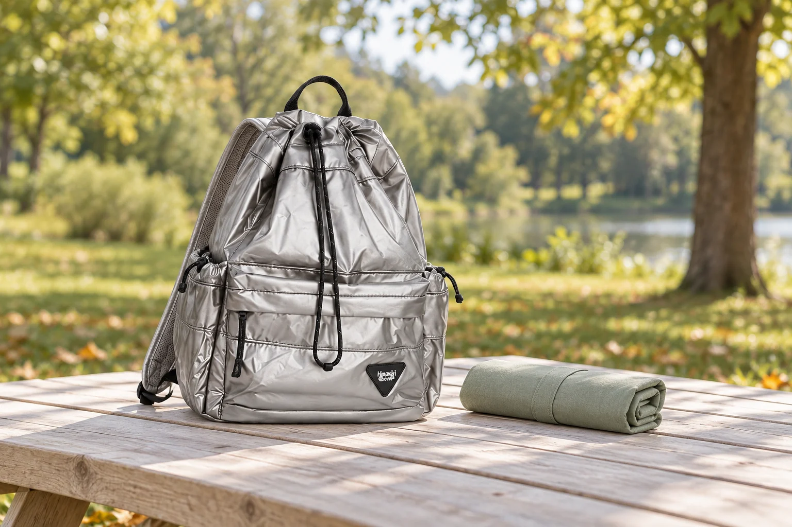

돗자리와 백팩을 챙긴 날: 돌아오는 짐은 따로 준비하세요

돗자리를 접어 백팩에 넣고 공원으로 나갑니다. 갈 때는 깨끗하고 반듯하지만, 한두 시간 앉아 있다 일어나면 밑면에 잔디와 흙이 묻어 있습니다. 이런 외출에서는 출발할 때의 부피만큼 돌아올 때의 상태를 생각해두면 좋습니다. 돗자리가 다시 가방 안으로 들어오는 과정을 중심으로 짐을 준비해보세요.
집에서: 접힌 크기에 주머니까지 더하기
돗자리의 펼친 크기는 앉을 공간을 알려주지만, 가방에 들어갈지는 접은 모양으로 봐야 합니다. 평소 접는 방식대로 접고 보관 주머니까지 씌운 상태를 확인하세요. 백팩 입구를 지나 안쪽에 자연스럽게 놓이는지, 다른 물건을 넣은 뒤에도 여밈이 무리 없이 닫히는지 봅니다. 별도 끈이나 고정 부위가 안내되지 않은 가방에 돗자리를 임의로 매달지는 않습니다.
도착해서: 바닥에 닿을 면을 기억하기
돗자리 사용이 허용된 곳인지 현장 안내를 확인하고, 물기가 고이거나 뾰족한 물건이 있는 자리는 피합니다. 어느 면이 바닥에 닿았는지 구분해두면 접을 때 깨끗한 면과 섞이는 일을 줄일 수 있습니다. 백팩은 돗자리의 깨끗한 가장자리처럼 안정된 위치에 두되 음식이나 음료와 맞닿지 않게 합니다. 사용 중 가방 끈이 흙바닥으로 길게 늘어지지 않는지도 살펴보세요.
떠나기 전에: 털기와 접기를 나누기
돗자리 위의 개인 물건부터 모두 챙긴 다음 밑면의 상태를 봅니다. 주변 사람에게 흙이나 먼지가 날리지 않도록 정리하고, 해당 제품의 안내에 맞게 마른 이물질을 제거하세요. 젖은 흙을 가방 안감이나 옷으로 닦지 않습니다. 깨끗한 면과 오염된 면의 접촉을 줄이는 방향으로 접되, 구조상 정해진 접는 순서가 있다면 그 방법을 따릅니다.
다시 담을 때: 임시 분리 공간 사용하기
사용한 돗자리를 넣을 별도 주머니를 출발할 때 준비해두면 편합니다. 주머니 자체가 젖거나 새지 않는지 확인하고 전자기기와 종이류에 직접 닿지 않게 둡니다. 가방에 들어가지 않는다고 물기가 남은 돗자리를 더 세게 압축하지 마세요. 상태나 부피가 달라졌다면 별도로 들 수 있는 방법을 선택합니다. 사진 속 No.0514와 돗자리는 연출 예시로, 같은 크기의 수납을 보장하지 않습니다.
귀가 후: 분리한 짐을 먼저 꺼내기
임시 주머니에 담았다는 이유로 다음 외출까지 그대로 두지 않습니다. 돗자리와 주머니를 꺼내 각각의 관리 안내대로 정리하고 충분히 말리세요. 백팩 안쪽에도 흙이나 물기가 옮겨갔는지 확인합니다. 다음번에는 쓸모없이 가져간 소품보다 사용 후 둘 곳이 없었던 물건을 기억해보세요. 돌아오는 짐의 자리를 준비하는 것만으로 외출 후 정리가 한결 단순해집니다.
참고·안내
- Himawari No.0514 제품 정보
- 실제 No.0514 제품 사진을 참조한 AI 연출 이미지입니다. 돗자리는 연출 소품이며 판매 구성이나 실제 수납량을 나타내지 않습니다.
자주 묻는 질문
돗자리를 백팩 겉에 묶어도 되나요?
해당 제품이 안내하는 고정 기능이 있는지 확인하세요. 지퍼나 장식 고리에 임의로 매다는 방식은 피합니다.
젖은 돗자리를 주머니에 넣으면 계속 보관해도 되나요?
이동 중 임시 분리와 보관은 다릅니다. 귀가하면 꺼내 각 제품의 관리 안내에 따라 정리하고 충분히 말립니다.